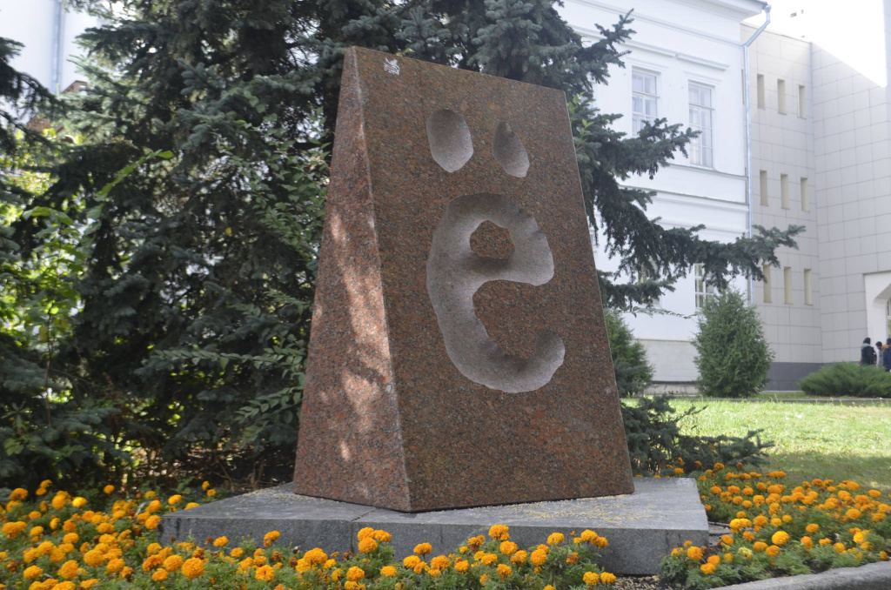
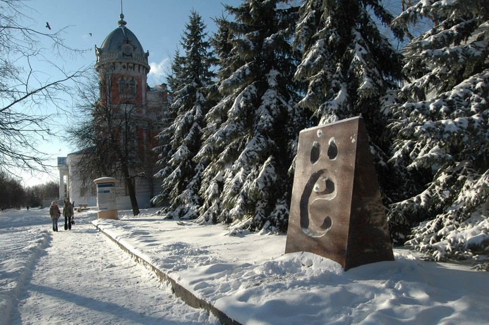
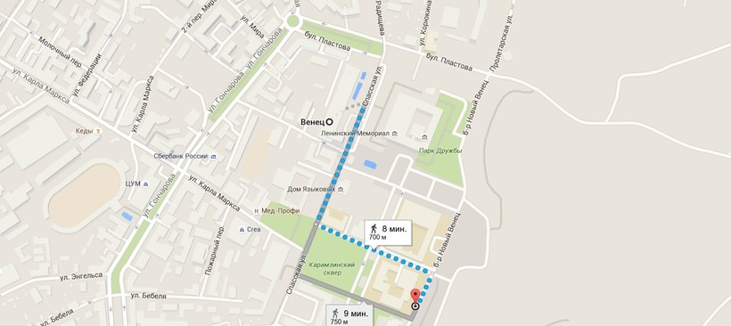

История буквы ё

В 2001 году город объявил конкурс на лучший проект памятника букве «ё» с расчётом установить его в честь
205-летия применения буквы[1]. Победителем конкурса стал один из инициаторов установки памятника[источник не
указан 1090 дней] — ульяновский художник Александр Зинин.Больше всего о важности "ё" могут поведать Артёмы, Алёны
и Фёдоры, у которых в паспорте перепутаны буквы, но это не единственная проблема. Лично знаю несколько
страдальцев, которые пытаются объяснить заграницей, почему Alena по паспорту читается как Alyona, а Artem на самом
деле Artyom. Известные личности также страдают от этой путаницы.
Например, писатель Василий Аксёнов лично добавлял точки к букве «е» в своей фамилии, в противовес шахматист Алехин
зачеркивал их. Даже самые знаменитые фамилии и названия со временем изменились и запомнились с неверным
произношением. Великий просветитель вообще-то носил фамилию МонтескьЁ, физик-изобретатель имел фамилию РЁнтген,
кардинал-интриган был РишельЁ, художник, который известен всем в России, РЁрих, а теорема в математике ГЁделя, а
не ГЕделя. Даже всем известный Лев Толстой имел первоначально церковное имя Лёв.
В жизни каждого человека есть место противоречивости и путанице между буквами е и ё, ведь в русском языке имеется
более 12 тысяч слов с использованием «ё». Для примера: «В ближайшие дни страна передохнет от голода». Как вы это
прочитали? А ведь разница действительно имеет значение.
До XVIII века буквы "ё" не существовало, вместо этого использовали сочетание "йо". Впервые осознание необходимости
буквы "ё" пришло в голову княгине Дашковой, участнице заседания Академии словесности в далёком 1783 году. Однако
её инициатива требовала значительных финансовых затрат, поэтому первая печать буквы "ё"датируется 1794 годом в
публикации «Мои безделки» И. Дмитриева.
Официальной же датой рождения буквы "ё" признают 17 августа 1796 года. Именно в это время Николай Карамзин в своём
произведении «Аониды» впервые отпечатал букву ё в слове «слёзы» странице 166, а первая прародительницей буквы ё
можно назвать Московскую университетскую типографию, где и печатался сборник стихов.
Вопрос же обязательности использования буквы "ё" был поднят в 1918 году, после чего стало допустимо заменять букву
"ё" на "е". Однако история не оставляла этот вопрос без внимания, и, из-за путаницы в военных картах и проваленных
заданий, Сталин выпустил приказ об обязательном использовании буквы "ё" в военных картах. В 1942 году вышел указ
об использовании её в школьном обучении. В качестве поддержки сего решения в 1945 году вышел справочник
употребления буквы "ё", и она снова вошла в орфографию русского языка.
Споры относительно "е" и "ё" не стихают и по сей день. Сравнительно недавно, в 2000 году, была выпущена книга «Два
века русской буквы Ё. История и словарь» с авторством Е. Пчелова и В. Чумакова.
Почему в Ульяновске
Многие туристы задаются вопросом, в каком городе установлен памятник букве «ё» и почему именно там?
ак я уже сказала, первым автором, напечатавшим литеру «ё» в своих трудах был знаменитый историк и литератор Николай
Михайлович Карамзин. Ульяновск же, в свою очередь, родина этого писателя.

Перед установкой памятника букве «ё» ульяновцы уже имели несколько исторических предпосылок к этому событию.
Во-первых, в XVIII веке в Ульяновске был установлен памятник Н. М. Карамзину, а точнее музе истории Клио, которая
его вдохновила, в сквере имени Карамзина в центре города.Во-вторых, в 90-е годы прошлого столетия в Ульяновске
издавался журнал под звучным названием «Ё», где публиковалась альтернативная литература. Основателями журнала были
Андрей Безденежных, Сергей Задумов, Иван Сивопляс и другие.Ну и не менее важный момент: краеведческое направление
имеет большое значение для исторического наследия города, поэтому жители стремятся поддержать культуру и традиции,
заложенные здесь. В данном споре о важности буквы «ё» Ульяновск также не остался в стороне.
Установка памятника
Первые разговоры об установке памятника начались в 1997 году, после двухсотлетия с момента официального дня рождения
«ё». В 2001 году был объявлен конкурс на лучший эскиз памятника букве «ё» в городе Ульяновске.
Победу одержал художник Александр Зинин. Основной идеей было повторить самый первый оттиск буквы «ё» в точности так
(кроме, естественно, размера), как она была отпечатана в произведении Карамзина. Памятник воспроизвел все неровности
первого написания, которые были выгравированы вручную. Кроме того, цветовая гамма также должна была повторить белый
лист бумаги и черную букву на нём.В 2005 году 4 сентября перед зданием Ульяновской областной научной библиотеки было
проведено торжественное открытие монумента букве "ё", которое было приурочено к 160-летию монумента Карамзину.
Первоначальный вариант памятника был выполнен из чёрного гранита, а оттиск буквы был белым, однако со временем он
был заменен.
На этот счет имеется 2 версии. Согласно одной, к открытию памятника не успел прибыть красный гранит, который был
заказан из Ростова, согласно другой, на мой взгляд, наиболее правдоподобной, черный гранит с белой надписью
напоминал горожанам надгробие в центре города и крайне смущал прохожих.
Впоследствии 3 ноября 2005 года памятник из черного мрамора был заменён на большую треугольную призму из красного
мрамора, в которую вдавлена буква «ё» всё с тем же сохранением первоначального написания, однако без цвета. Высота
монумента - 2,05 м, вес около 3х тонн. Каждая из 4х плит в основании длиной в 1,25 м и весом примерно 500 кг.

Где находится памятник букве «ё»
За более чем 10 лет памятник букве «ё» в Ульяновске становится всё более известным. Ни одна экскурсия по Ульяновску
не обходится без посещения сего монумента, фото с памятником букве «ё» одно из памятных воспоминаний о городе. Кроме
того, памятник букве «ё» как и сама буква, часто украшает сувениры и магнитики, которые можно привезти из своей
поездки на родину Ленина.
Наряду с памятником основателю города Богдану Хитрово, видом на 2 моста Ульяновска и мемориалом, памятник расположен
в центре города. Остановка называется «Гостиница Венец», сюда вас довезут трамваи №4 и 2, а также маршрутки. Сам
памятник расположен перед Ульяновской областной научной библиотекой, на пути от мемориала В. И. Ленину до
Краеведческого музея. На карте показано, как добраться от гостиницы Венец, и где стоит памятник букве "ё"